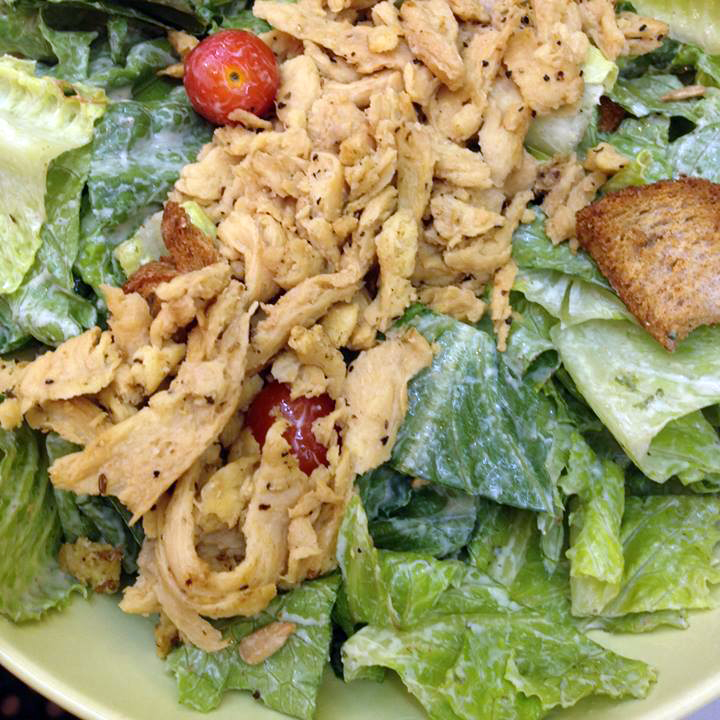
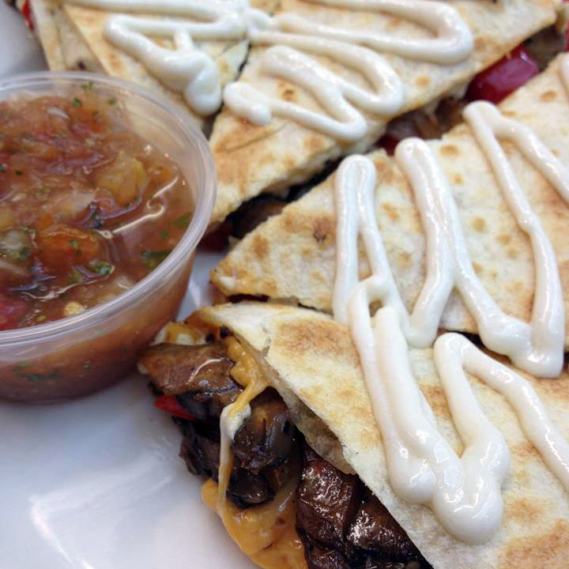
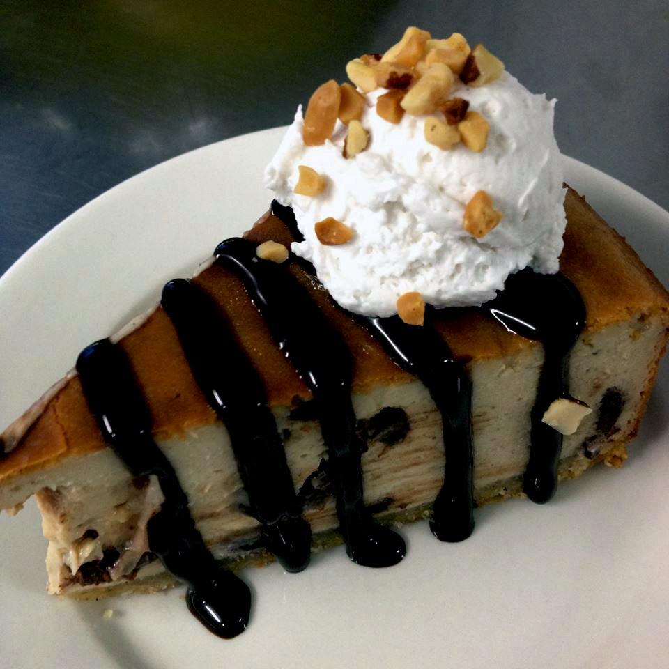
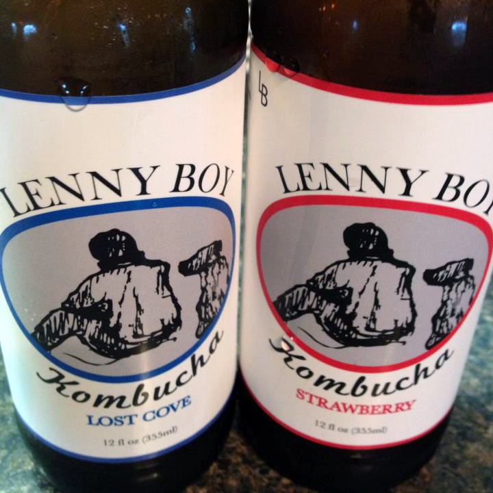

Starters | $6.50
- Soy chorizo and black beans mixed in our queso sauce served with sour creamy sauce, salsa and corn chips
- Crabbie mix (Jackfruit, veggies, Vegenaise and spices) combined with dairy free cream cheese and served with corn chips
(Southern Style, Buffalo, BBQ or Teriyaki Sauce) - (8) Tofu fingers braised with spices, battered and fried tossed with your choice of sauce. Served with Blue Cheesish or Ranch.
- Flour tortilla filled with Daiya Shreds, mushrooms, onions and peppers, drizzled with sour creamy sauce and served with salsa
- A Southern Classic! Battered and fried dill pickle chips piled in a basket with Ranch on the side
- Our take on Southern Pimento Cheesish Dip served with corn chips
Salads | $8.50
Vegan Ranch, Blue Cheesish, Agave Mustard, 1000 Island Choice of Crabbie Salad (GF), Cold Braised Tofu (GF), BBQ Soy Curls (GF) or Fried Tofu Fingers (Buffalo, BBQ, or Teriyaki) served in a bowl on top of mixed greens with fresh vegetables.

Sides | $2.50

Sandwiches | $8.50
served with a side
- Jackfruit, veggies, vegenaise and spices - tricked into a patty, fried and served on a toasted bun with 1000 Island, lettuce, tomato, and onion on the side
- A classic Reuben, Vegan Style. Our Housemade lunch loaf sliced and sautéed with Daiya Mozzarella Shreds. Topped with sauerkraut and 1000 Island. Served on Rye Bread
(Southern Style, Buffalo, BBQ or Teriyaki Sauce) - Our battered and fried tofu fingers tossed with your choice of sauce served on a toasted bun with Vegan Ranch, lettuce, tomato, and onion on the side
- Our now famous Jackfruit grilled and smothered in BBQ sauce. Topped with coleslaw and served on a toasted bun
- Soy Curls basted in spicy Eastern NC BBQ Sauce then smothered with our house BBQ. Topped with cole slaw and served on a toasted bun

Deluxe Burgers | $9.50
served with a side
Extras $1 – Daiya Cheese, Mushrooms, Chili, Queso, Pimento Cheesish or Seitan Bacon
- Build your own burger with one extra. Served with Vegenaise, lettuce, tomato and onion.Harmony Valley Burger- No extra- 8.50
- 2 Burger Patties, special sauce, lettuce, Daiya Shreds, pickles, onions with a sesame seed bun
- smothered with Daiya Cheddar and fried jalapeno chips. Served with Vegenaise, lettuce, tomato and onion
- topped with Daiya Cheddar, Texas Pete Chili, cole slaw, mustard and onions
- smothered with Daiya Cheddar Shreds. Served with Vegenaise, lettuce, tomato and onion
- Melted Daiya Cheddar Shreds, shredded lettuce, tomato, Vegenaise, pickles, onion and ketchup
Lil’ Sprout Menu | $5
Plates and Bowls | $12
- Harmony Valley mixed with onions, celery, tomato sauce and spices with ketchup baked on top. Just like Grandma would make (if she were vegan). Served in a bowl with two sides
(Southern Style, Buffalo, BBQ or Teriyaki Sauce) - (10) of our Tofu fingers battered and fried then tossed with your choice of sauce. Served with Blue Cheesish or Ranch
- Young savory Jackfruit seasoned and grilled with onions and peppers on corn tortillas with tomatillo salsa and sour creamy sauce on top with salsa on the side
- (2) Fried Crabbie Patties (Jackfruit, veggies, vegenaise and spices) served on a bed of spring mix with 1000 Island on the side
- (5) Fried Tofu Fingers with your choice of sauce (Southern Style, Buffalo, BBQ or Teriyaki Sauce) or Oven roasted Portabellas (GF) orSpicy Pulled BBQ (GF) on top of red beans, rice, kale, and Ranch dressing with sesame seeds
Dessert | $4.50

Drinks
Fountain Drinks | $2
Bottled Soda | $2.50
Lenny Boy Kombucha | $4
Beer and Wine | prices vary